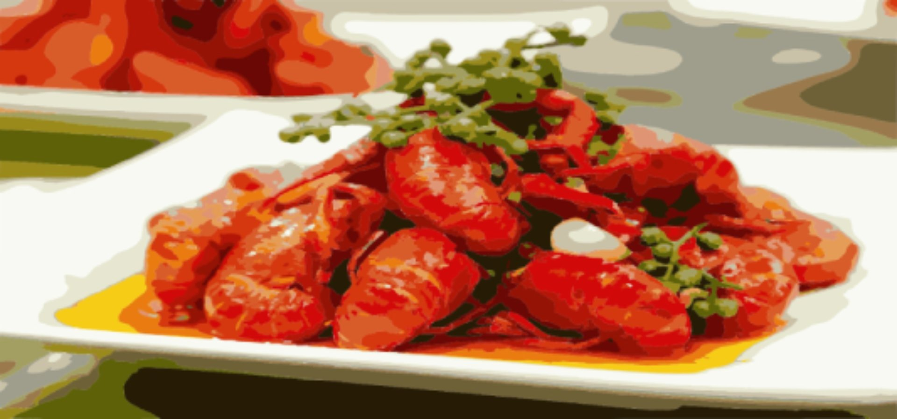

海鲜火锅
海鲜火锅是中国传统的民间美食，然而随着消费者对餐饮的要求提高，传统的海鲜火锅已不能满足大众消费。
全新的海鲜火锅“裸烹”成为火锅餐饮行业的新法宝，纯天然火锅新模式，在国内火锅餐饮门店掀起了一波海鲜火锅热潮，深受人们欢迎。
重庆火锅

重庆火锅，又称毛肚火锅或麻辣火锅，系四大菜系之一的川菜系饮食，是中国传统饮食方式之一；以“辣、麻、咸、鲜、香、脆”为其口味，具有菜品多样、调味独特、吃法豪放等特点。
重庆火锅起源于明末清初的重庆嘉陵江畔、朝天门等码头船工纤夫的粗放餐饮方式，其主要原料是牛毛肚、猪黄喉、鸭肠、牛血旺等。
重庆火锅大约是在清代道光年间，即有记载称重庆的筵席上开始有了水锅。四川作家李颉人在其所著的《风土什志》中说，火锅发源于重庆。
在2007年3月20日开幕的第三届中国（重庆）火锅美食文化节上，中国烹饪协会已正式命名重庆为“中国火锅之都”。
2016年5月，“重庆火锅”当选为“重庆十大文化符号”之首，本次评选是按文化含量、知名度、美誉度、代表性、独特性、地域性、时代性7大标准进行评选。
2022年，重庆火锅全产业链收入超过4000亿元。其中火锅营业收入600多亿元，解决就业近100万人。截至2023年1月，重庆火锅门店近3万家，全国近20万家，
重庆火锅已经走出重庆，走出国门，走向世界，成为一张靓丽的美食名片。
麻辣小龙虾

口味虾，又名麻辣小龙虾、长沙口味虾、香辣小龙虾等，是湖南省的一道传统名菜，属于湘菜系，该菜品以小龙虾制成，口味麻辣鲜香，色泽红亮，质地滑嫩，滋味香辣。
20世纪末开始传遍全国，成为人们夏夜街边啤酒摊的经典小吃。主料所用龙虾原产自北美洲，1918年由美国引入日本，1929年再由日本引入中国，生长在中国南方的河湖池沼中。
麻辣小龙虾起源于中国南方的长江流域，可以追溯到20世纪80年代初期。那时候，小龙虾还不是什么大众美食，只在一些江河边上的小餐馆里卖。最初，小龙虾是用来吃火锅底料的一种调味品，当时的人们认为小龙虾的鲜味和香气能够增添火锅的美味。渐渐地，人们开始直接将小龙虾煮熟吃，加入了麻辣和花椒等调料，于是麻辣小龙虾这道美食就诞生了。
麻辣小龙虾不仅仅是一道菜肴，还代表了中国南方的美食文化和社交习惯。在中国南方，吃小龙虾是一种社交活动，人们通常会找几个朋友一起去吃小龙虾，喝点啤酒，聊聊天，享受美食带来的快乐和放松。这种习俗在中国的大中城市越来越流行，甚至成为了一个时尚文化现象。不仅如此，麻辣小龙虾还被认为是一种开胃菜，能够提高食欲，促进消化，对身体健康有益。